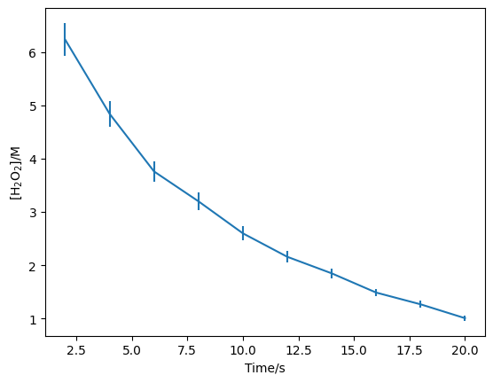
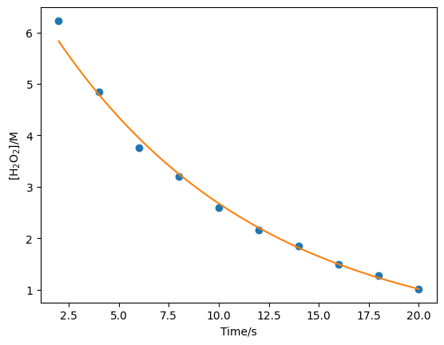

Exercises#
The first exercise was to modify the first-order rate law code to account for a y-uncertainty of 5 %.
import numpy as np
import matplotlib.pyplot as plt
Let’s create a new array with the y-uncertainty (c_err).
c = np.array([6.23, 4.84, 3.76, 3.20, 2.60, 2.16, 1.85, 1.49, 1.27, 1.01])
c_err = c * 0.05
t = np.array([2, 4, 6, 8, 10, 12, 14, 16, 18, 20])
plt.errorbar(t, c, c_err)
plt.xlabel('Time/s')
plt.ylabel('[H$_2$O$_2$]/M')
plt.show()

Using the model from the example.
def first_order(t, a0, k):
"""
The first-order rate equation.
Args:
t (float): Time (s).
a0 (float): Initial concentration (mol/dm3).
k (float): Rate constant (s-1).
Returns:
(float): Concentration at time t (mol/dm3).
"""
return a0 * np.exp(-k * t)
But with a modified chi_squared.
def chi_squared(x, t, data, error):
"""
Determine the chi-squared value for a first-order rate equation.
Args:
x (list): The variable parameters.
t (float): Time (s).
data (float): Experimental concentration data.
error (float): Uncertainty in concentration data.
Returns:
(float): chi^2 value.
"""
a0 = x[0]
k = x[1]
return np.sum((data - first_order(t, a0, k)) ** 2 / (error ** 2))
Then we do the minimisation as before.
But with the c_err as an arg and starting positions informed by the previous analysis.
from scipy.optimize import minimize
result = minimize(chi_squared, [7, 0.1], args=(t, c, c_err))
result.x
array([7.08438448, 0.09737419])
x = np.linspace(2, 20, 1000)
plt.plot(t, c, 'o')
plt.plot(x, first_order(x, result.x[0], result.x[1]))
plt.xlabel('Time/s')
plt.ylabel('[H$_2$O$_2$]/M')
plt.show()

This can also be achieved with the use of the sigma flag in the scipy.optimize.curve_fit function.
from scipy.optimize import curve_fit
popt, pcov = curve_fit(first_order, t, c, sigma=c_err)
/tmp/ipykernel_2285/2319394663.py:13: RuntimeWarning: overflow encountered in exp
return a0 * np.exp(-k * t)
uncertainties = np.sqrt(pcov)
print(f"[A]_0 = {popt[0]} +/- {uncertainties[0][0]}; k = {popt[1]} +/- {uncertainties[1][1]}")
[A]_0 = 7.084387204820056 +/- 0.17113707059226646; k = 0.09737422484062833 +/- 0.0019530371481279983